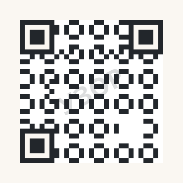

G25.09 · issue #707 · эпік #346 · шаблон 4/4
Картка-запрашэнне з QR — A6 105×148 мм, 300 dpi (1240×1748 px)
Друкаваны адлівак вэб-увходу: назва прагулкі → адзін драконавы зварот → QR → тэкставы ўзор прызначэння. QR на шаблоне — плейсхолдер: у рэпе web/lib/qr.ts піша, што QR толькі гэткі, як закадаваны URL, і выдуманы домен шлёа наведвальніка на чужы адрас; таму рэальны QR піша scripts/build-qr.ts з app-links.siteOrigin пасля рашэння G10.02.b. Узор прызначэння — тэставы домен рэпы kudy-test.example (зарэзерваваны .example), што выкарыстоўваюць і тэсты web/lib/qr.test.ts.
Крыніцы: брыф v1 (
a11ea86) · канон G06.07 · пазы G25.03 · QR-кантракт web/lib/qr.ts + app-links.ts. Патрабаванні QR, правераныя 12.10.2026: цішынная зона ≥ 4 модулі з кожнага боку (ISO/IEC 18004); на друкаванай картцы ў руку — QR ≥ 25×25 мм (тут 28 мм). Забароненыя абяцанні: падарунак, кэш, «калектуй усё» (адкладзены спіс B10 → #695).§1 · Канвы A6 · беларуская і англійская пункцір — бяспечная зона друку 4 мм ад краю (47 px); важлівае змесьціва — толькі ўнутры
бяспечная зона друку 4 мм
Прагулка ў KUDY
Воднае люстра
Гданьска
Гданьска
Хадзем, пакажу
Аўдыёгіды для гарадскіх прагулак: тэкст і аўдыё ў браўзеры, без усталёўкі і акаўнта.
Бясплатна
плейсхолдер — рэальны QR піша
scripts/build-qr.ts пасля рашэння пра домен (G10.02.b)kudy-test.example/be/guides/demo-route-a1

Узор прызначэння — тэставы домен
kudy-test.example; назва прагулкі — аўтарскі ўзор кантэнту (§7 ліста). Цішынная зона QR ≥ 4 модулі (ISO/IEC 18004); QR 28×28 мм. Ніякіх абяцанняў пра ўзнагароды, падарункі або схаваныя кропкі.канцэпт · QR плейсхолдер
web.ui.privacyIntro (запіс пачынаецца «KUDY — …» і мае хвост пра старонку); «Бясплатна» — native.chrome.access.free на бурштыне B04.2 з ink-тэкстам 6.83:1. Слот іконкі — напрамак I1 G24.02, фінальны асет пасля #693.print safe area 4 mm
A walk in KUDY
The water mirror
of Gdańsk
of Gdańsk
Come, I’ll show you
Audio guides for city walks: text and audio in the browser, no install, no account.
Freeplaceholder — the real QR is written by
scripts/build-qr.ts after the domain decision (G10.02.b)kudy-test.example/en/guides/demo-route-a1
Sample destination — the repo’s test domain
kudy-test.example; the walk title is authored sample content (§7 of the results). QR quiet zone ≥ 4 modules (ISO/IEC 18004); QR 28×28 mm. No promises of rewards, gifts or hidden spots.concept · QR placeholder
localePath дае префікс мовы ў адрасе (web/lib/content/site.ts) — en-версія ўзору гэта адлюстроўвае.§2 · Правілы напаўнення запрашэння што заўсёды, што ніколі — пазнакі ўдзельнікаў G25.08 бяруць адсюль
| Заўсёды | Змест/правіла |
|---|---|
| Ідэнтыфікацыя прадукта | іконка/слот + «Прагулка ў KUDY»; дракон толькі як твар і зварот, не лагатып (канон §6) |
| Адна прапанова | адна назва прагулкі; спіс гідаў на картцы не жыве |
| Тэкставы ўзор прызначэння | адрас побач з QR чытаецца вачыма — без скану зразумела, куды вядзе картка |
| Цішынная зона | ≥ 4 модулі; на QR ні тэксту, ні штампаў, ні налепак зверху |
| Ніколі | Чаму |
| Абяцанне падарунка/кэша | картка не абяцае ўзнагароду за скан; фізічныя скарбы — адкладзены спіс B10 (рашэнне #695/#696, асобны брэйншторм) |
| «Калектуй усё», лічыльнікі, балы | штодзённыя серыі і ціск — па-за канцэпцыяй (брыф §Калекцыя) |
| Сканавальны QR з выдуманым доменам | выдуманы origin шлёа наведвальніка на чужы адрас — кантракт web/lib/qr.ts |
| Гістарычныя сцвярджэнні на картцы | мастацкія рэплікі дракона не падмяняюць гістарычныя крыніцы (брыф §Дракон) |